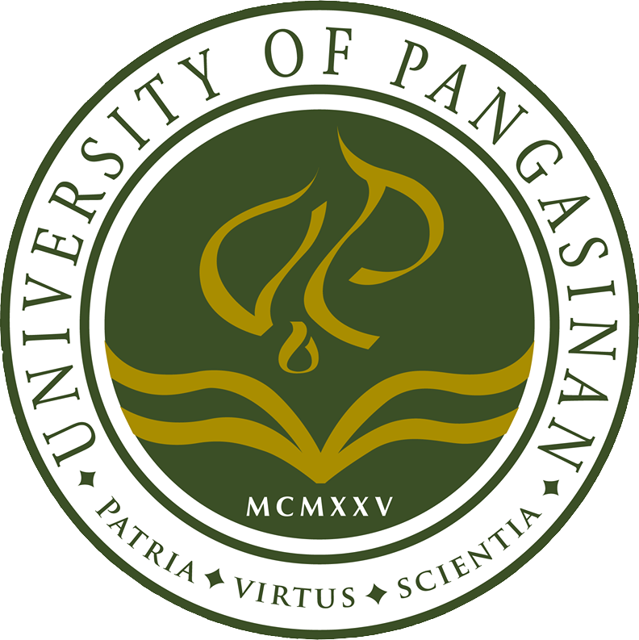

PHINMA-University of Pangasinan

The story of the PHINMA University of Pangasinan started in 1925. Francisco Benitez, Dr. Apolinario de los Santos, Dr. Sylvestre Pascual and Dr. Blas F. Rayos, all esteemed Pangasinenses, built the Dagupan Institute, a school which offered primary, secondary, and vocational education. The Institute was renamed to Dagupan Junior College after the Second World War, expanded its course offerings and added a Graduate School. In 1950, the school was transformed and became Dagupan Colleges. The school continued to provide more courses to fulfill its commitment of delivering excellent education to the youth not just in Pangasinan, but Northern Luzon. Dagupan Colleges was granted university status through the University Charter of the Department of Education, and was given the name University of Pangasinan.
PHINMA University of Pangasinan continued to offer its brand of premier local education in 2009, after its acquisition by PHINMA. Through PHINMA’s leadership and management, the college further developed its existing academic programs by employing non-traditional approaches to learning.
To date, there are two campuses: in Dagupan, and in Urdaneta. Through PHINMA UPang, PHINMA is realizing its goal of providing better quality yet affordable education to more Filipinos. Graduates from PHINMA UPang continue to excel in board examinations, particularly in nursing and engineering.
|  |
Connect and Move Up with UPangWebsite Facebook Facebook
|
Website Creators
|